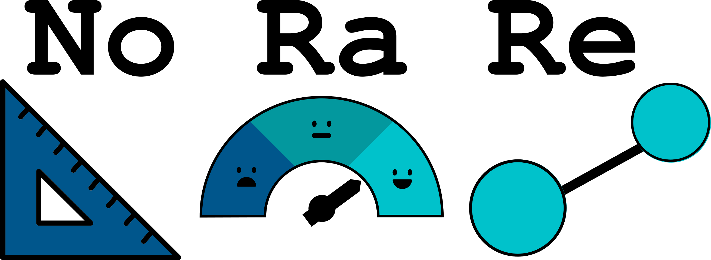

-
Welcome to NoRaRe
 Welcome to NoRaRe, the cross-linguistic database of norms, ratings, and relations of words and concepts. In order to browse through the data, just navigate to the Concepts tab, and type in the name of any concept you can think of. The tool will answer with a couple of suggestions, showing you the definitions that are actively being used in the Concepticon project, and allow you to search all the metadata which we have so far accumulated on the respective concept.
Release v0.1 Date July 23, 2020 DOI http://doi.org/10.5281/zenodo.3957681 Authors Annika Tjuka, Robert Forkel, and Johann-Mattis List Last updated on 2020-07-20.

This website by Annika Tjuka, Robert Forkel, and Johann-Mattis List is licensed under a Creative Commons Attribution 4.0 International License. -
Concept Lookup in NoRaRe
To browse the data on norms, ratings, and relations for individual concepts, just type in the gloss of a given concept you want to investigate.
English German Chinese French Spanish Russian Portuguese
Selected language: English
Last updated on 2020-07-20.
This website by Annika Tjuka, Robert Forkel, and Johann-Mattis List is licensed under a Creative Commons Attribution 4.0 International License. -
Datasets in NoRaRe
The datasets in NoRaRe come from two basic types of sources. On the one hand, we have datasets curated as part of the Concepticon project. On the other hand, we have freshly curated dataset which we added genuinely to NoRaRe.Last updated on 2020-07-20.
This website by Annika Tjuka, Robert Forkel, and Johann-Mattis List is licensed under a Creative Commons Attribution 4.0 International License. -
About
This web application serves as a light-weight interface to quickly browse the cross-linguistic data on norms, ratings, and relations of words and concepts which we have assembled in form of the NoRaRe-database which itself can be understood as an expansion of the Concepticon project, which links concept lists used in the literature in historical linguistics, linguistics typology, and psycholinguistics to unique concept sets. While Concepticon links concept lists to concept sets, NoRaRe adds information on specific concept characteristics, as they are provided in different datasets that have been published along with studies in historical linguistics, linguistic typology, and psycholinguistics.
More information on how to use the data can be found in a study currently under review. If you use the data assembled here, we ask you kindly to cite the study.
Tjuka, A., Forkel, R., and List, J.-M. (submitted 2020, July 27). Linking Norms, Ratings, and Relations of Words and Concepts Across Multiple Language Varieties.
Last updated on 2020-07-20.
This website by Annika Tjuka, Robert Forkel, and Johann-Mattis List is licensed under a Creative Commons Attribution 4.0 International License.